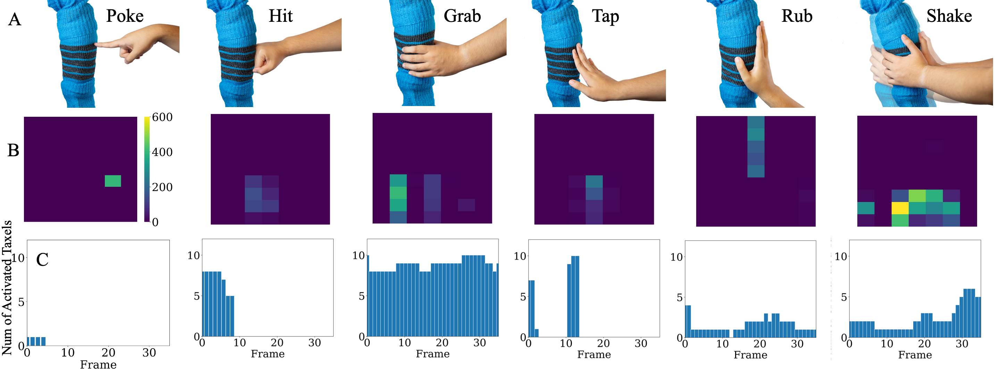
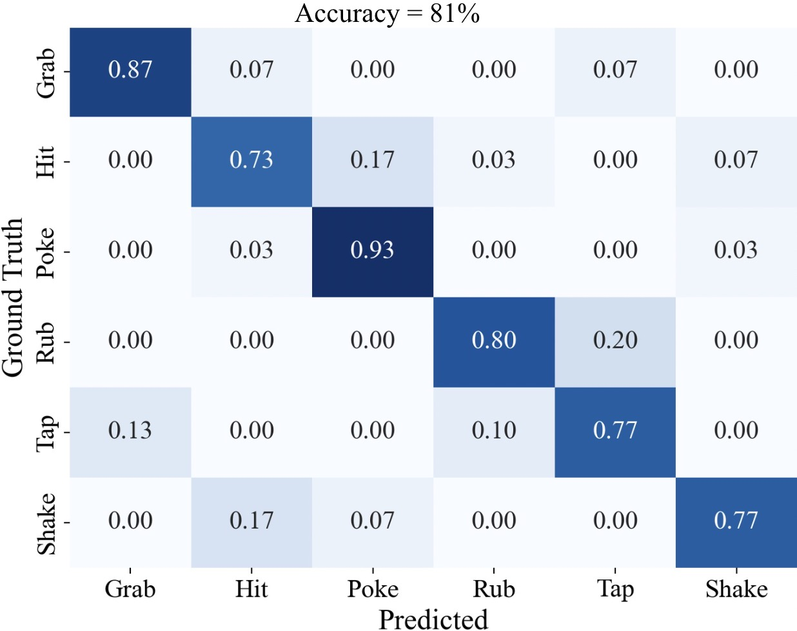

ABSTRACT
Humans are able to convey different messages using only touch. Equipping robots with the ability to understand social touch adds another modality in which humans and robots can communicate. In this paper, we present a social gesture recognition system using a fabric-based, large-scale tactile sensor placed onto the arms of a humanoid robot. We built a social gesture dataset using multiple participants and extracted temporal features for classification. By collecting tactile data on a humanoid robot, our system provides insights into human-robot social touch, and displays that the use of fabric based sensors could be a potential way of advancing the development of spHRI systems for more natural and effective communication.
Social Gesture Signals
We performed six different types of gestures and collected the signals from differing users to create a dataset. Our system was able to produce signals which could be differintated for the gestures selected. Below displays the the gesuture being performed, the digitial output of the signal, and the temporal feature extracted which was the number of taxels actived.
These are the six gestures used to create our dataset. We had different participants perform each gesture on the sensor. For the temporal feature display we extracted the first 32 frames of the gesture and recored the numnber of taxels actived per frame.
We placed the sensor on the links of the robot to help create a more stable sensor reading if the robot were in motion.
Gesture Recognition
We used a MLP to classify our dataset. The six different gestures, which are displayed above, were used to demonstrate the ability of the system to distingush different types of gestures.
Our model yeilded an accuracy of 81%. There is still much to improve on with our system and dataset creation but the results seem promising.
Summary Video
You can find a demostration of someone performing the gestures on the sensor in the video displayed below.